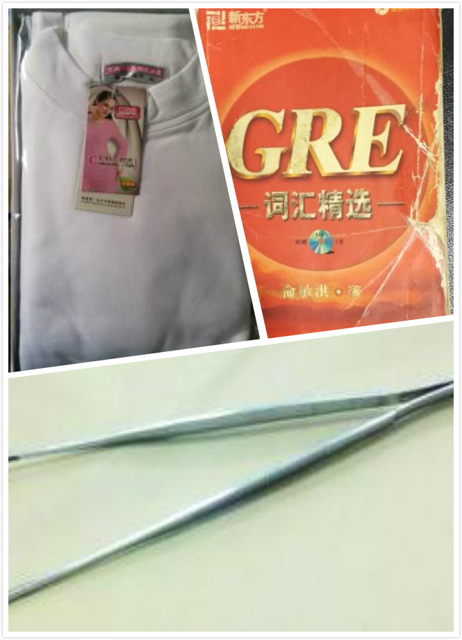
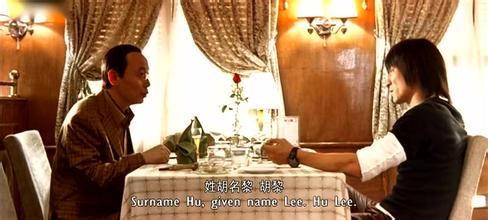

古城贼文化
吃完晚饭与淋波&宝强在园区周边溜达一圈，不知怎么的扯到了小偷和被盗这个悲催的话题。三个人各自讲了自己经历的这方面的糗事，居然洋洋洒洒的扯了咕咚3000步。发现无论是数量还是质量还是精彩指数都完爆那两位，而这些素材都得益于在家乡古城的那几年经历，然后晚上回来虽然很晚了还是把这些归纳整理了下。
记忆最深刻的是在解放路上图书大厦的那次遭遇。那会儿刚从东北的铁路工地上回到家乡的这个城市，好久找不到工作，最后在和平门里一个老民居的公司里跑业务送东西。无意中撞到附近解放路上图书大厦里，后来就每天上午在这里看半天书，下午接着去跑业务。到现在能从搞工地的工程跨界到另外一个工程，也是这阵子开的头。
和那位君子（后文中都君子，是简称，不是尊称。灵感于小时候小人书里有梁上君子的说法）的偶遇也就发生在书城下面的存包处。那天正在存包时突的感觉裤兜里有点动静，伸手一看，一个大镊子正夹手机玩外拽。有点惊慌，这可是当时唯一的家用电器啊，有点愤怒，想大喊小偷，说实话还有点害怕，对面那个肥头大耳留着板寸的君子哥面相有点凶，而且高我半头。总之，几秒钟里气氛有点奇怪。没想对面的板寸哥却却异常镇定，像个大哥哥一样的非常和蔼的的拍拍我的肩膀说“小兄弟，不好意思，搞错了，搞错了。。。”，然后就消失在大街上。留下一个原地里发愣的傻逼青年在想“搞错了”是啥意思，当时要是顺利被偷走了，就没搞错这茬了吧。后面好几年里多次坐车经过这里，往这边瞄下，总能看到那个平头哥在这里晃悠。

另外一次是虽然没有直接交互，但却非常有意思的来了个亲密接触。这次遭遇的不是一个君子哥，而是一群。故事发生在古城隔壁的渭城。和我一样，同事刘哥在东北工地完事后，也不去后面的青藏工地上班了，在家乡开了个卖小工艺品的小店。那年考完研入学前要转档案到NPU，就到修桥的原单位处机关里办手续，被拖了好几天。机关在刘哥店所在的渭城，那几天没事就在刘哥店里帮忙，有时还拿着老俞的红宝书准备GRE翻翻。每到晚上七八点吃完晚饭的时候，是店里生意最好的时候，几平米的小店里就挤满了人，主要都是些小姑娘。店里实在太挤了，有时候就蹲在店门口的台阶上打发时间，偶尔还好翻两下红宝书。一天傍晚正蹲着，不知什么时候身边整整齐齐的又蹲了仨哥们儿，一字儿排开蹲在我的隔壁抽烟，每人手里拿着一个硬纸板撑着的一套秋衣。刘哥之前早就说过这边有股这种神秘的势力，这帮人都是拿着一个秋衣盒子做拆挡，然后还另外一只手用镊子夹手机。于是就比较好奇的偷偷瞄一眼蹲在边上的这三位仁兄，碰巧三个人也整整齐齐的从上打量我，目光尤其落在我手上的这本书上。当时心里就乐了“人家一定当我是这片新来的吧，装备不太本地化啊”。难怪人家看我是那种同行冤家的那种感觉，《天下无贼》里葛优碰上刘德华啦。我也挑衅的瞪了他们一眼，这几个哥哥会了下眼神就离开了。
除了直接近距离直接交手这么两次，坐车骑车目击的就更多了。在南大街见过一直跟着行人走手伸到人家挎包里的；上班骑车路过含光路见过几个小朋友跟着前面的自行车跑，去伸手到骑车人斜跨的包里；在火车站还看到过一个一条腿的君子头目拄着拐杖指挥者兄弟们一起挤起点站的14路公交车的。
当然更近距离经历的是和宿舍的两个舍友三个男人第一次逛东大街，结果那个小名华华的东北三好小伙，手机上插着耳机正听着歌时被人拿走了。真为那个下手的君子哥的手法和胆识所折服。想这个动作是多么需要技巧和胆量，从裤兜里轻轻的掏出手机，快速拔掉耳机，然后离开现场或者伪装成路人。总之这一行还真是像葛优演的梨叔说的讲究技术含量的，也是业务素质要求很高的一个行业。

因为地理或者一些其他什么原因，在这个古城的这种行业尤其发达。在这个城市生活的人们估计很少有人能幸免不遭遇一点。除了上面热闹的几个场景，本人几轮交手下来的负向战利品是一个电脑台式机和4+辆自行车。在这里丢自行车电瓶车几乎是每个人都经历过的。印象最深刻的是最后一辆，不对，是最后两辆。这段经历在当时项目组里被广为流传：因为这个倒霉蛋连着两天丢了两辆。也就是今天丢了，重新买一辆，第二天早上又没了。汗！
如果说在古城方几十里圆范围内随处可以碰到这些君子们不算啥的话，在他乡遇故人的感觉就非常特别了。事情那发生在南方一个城市火车站。那是一个下午，正走着路，就听到前面两个人用熟悉的乡音在交流。虽然这么远的地方碰到老乡不至于激动上去搭腔，但是多听几声乡音的冲动还是有的。但是多听了几声，发现味道就不对了。一个用带着脏字的土话教育另外一个，“咋这么笨，那个背包在后面背着还下不了手”。妈呀，您们这是千里之外拓展业务来了，一种滑稽的自豪感油然而生。真是应了牛群给冯巩说的那句“tou出亚洲，tou向世界”。还真保不齐人家是这边办事处编制的。老家竞争太激烈了，南下开拓市场了。
当然，谁也不会抹黑自己的家乡。咱更是时时以家乡古城悠久的历史和文化而自豪。戏虐的写下这些文字也只是archive一个很有意思的主题记忆。没想到拎起来居然能扯这么多。
很多年了，也没有那种丢了东西的伤感，也没有当时的愤怒和对这个群体的仇恨。本来想取名“古城贼影”，觉得有几分惊悚和，又有点武侠的庸俗，联系下古城的特色，觉得“古城贼文化”似乎更契合这个城市的气质和闷骚的底蕴。只是不小心又揭了我们华华伤疤。那天回到宿舍大家都很愤怒，都忙着安慰你，没好意思问个问题“到底当时发生了什么，耳机在耳朵里插着手机也能被拿走了？”